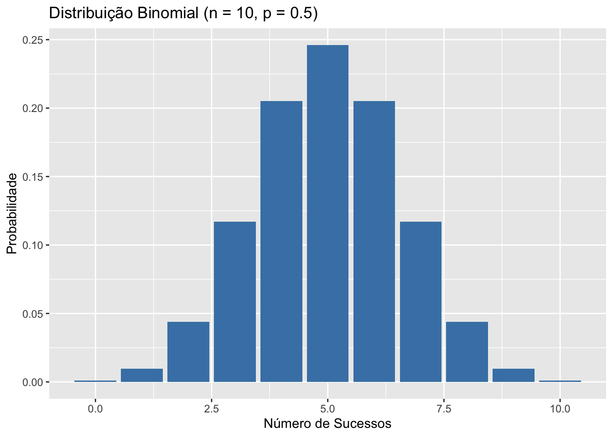
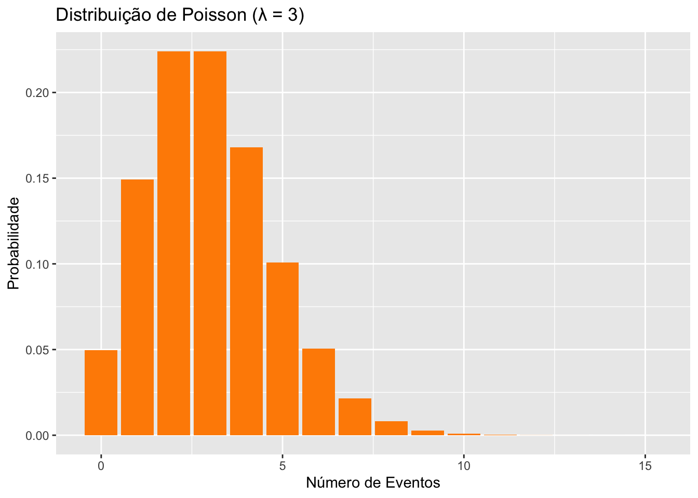
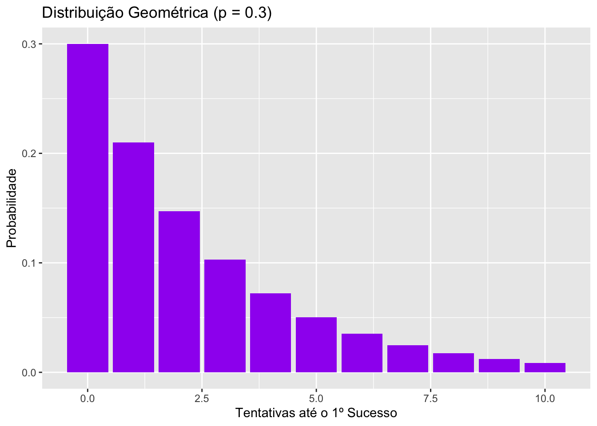
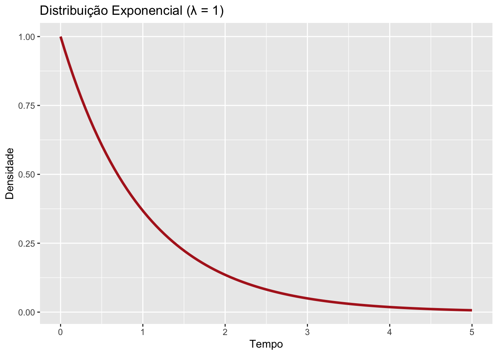
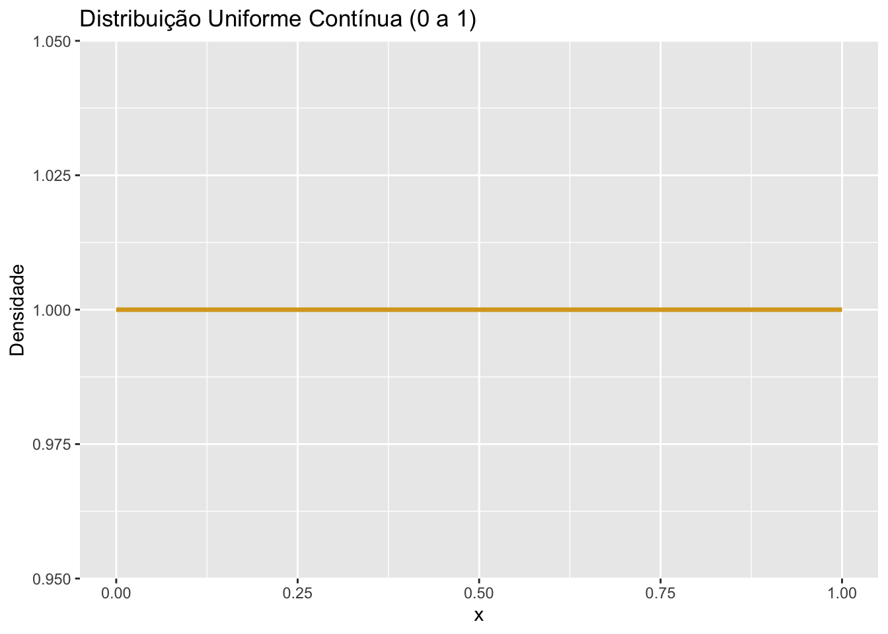
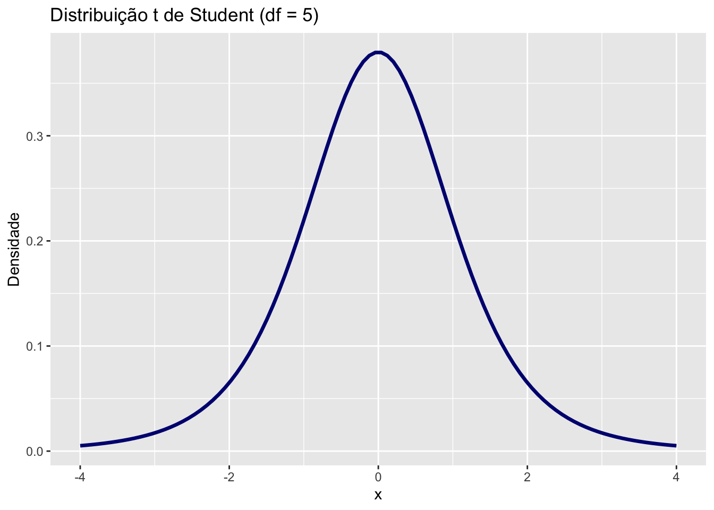
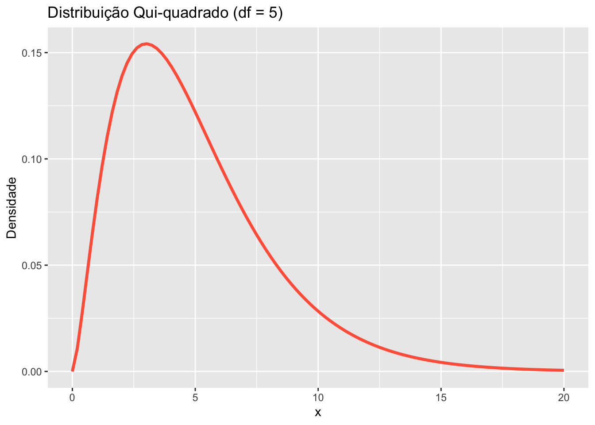
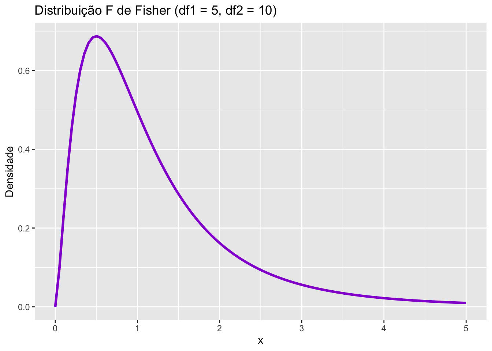

Capítulo 15 Exemplos de distribuições
15.1 Distribuições Discretas
15.1.1 Binomial
Modela o número de sucessos em n tentativas com probabilidade p.
n <- 10
p <- 0.5
x <- 0:n
y <- dbinom(x, size = n, prob = p)
ggplot(data.frame(x, y), aes(x, y)) +
geom_bar(stat = "identity", fill = "steelblue") +
labs(title = "Distribuição Binomial (n = 10, p = 0.5)", x = "Número de Sucessos", y = "Probabilidade")
15.1.2 Poisson
Modela o número de eventos raros num intervalo fixo.
lambda <- 3
x <- 0:15
y <- dpois(x, lambda)
ggplot(data.frame(x, y), aes(x, y)) +
geom_bar(stat = "identity", fill = "darkorange") +
labs(title = "Distribuição de Poisson (λ = 3)", x = "Número de Eventos", y = "Probabilidade")
15.1.3 Geométrica
Modela o número de falhas antes do primeiro sucesso.
p <- 0.3
x <- 0:10
y <- dgeom(x, prob = p)
ggplot(data.frame(x, y), aes(x, y)) +
geom_bar(stat = "identity", fill = "purple") +
labs(title = "Distribuição Geométrica (p = 0.3)", x = "Tentativas até o 1º Sucesso", y = "Probabilidade")
15.2 Distribuições Contínuas
15.2.1 Normal
Modela fenômenos naturais e erros de medida.
x <- seq(-4, 4, length.out = 100)
y <- dnorm(x)
ggplot(data.frame(x, y), aes(x, y)) +
geom_line(color = "darkgreen", linewidth = 1.2) +
labs(title = "Distribuição Normal (média = 0, sd = 1)", x = "x", y = "Densidade")
15.2.2 Exponencial
Tempo até um evento ocorrer.
lambda <- 1
x <- seq(0, 5, length.out = 100)
y <- dexp(x, rate = lambda)
ggplot(data.frame(x, y), aes(x, y)) +
geom_line(color = "firebrick", size = 1.2) +
labs(title = "Distribuição Exponencial (λ = 1)", x = "Tempo", y = "Densidade")## Warning: Using `size` aesthetic for lines was deprecated in ggplot2 3.4.0.
## ℹ Please use `linewidth` instead.
## This warning is displayed once every 8 hours.
## Call `lifecycle::last_lifecycle_warnings()` to see where this warning
## was generated.
15.2.3 Uniforme Contínua
Todos os valores têm a mesma chance.
x <- seq(0, 1, length.out = 100)
y <- dunif(x, min = 0, max = 1)
ggplot(data.frame(x, y), aes(x, y)) +
geom_line(color = "goldenrod", size = 1.2) +
labs(title = "Distribuição Uniforme Contínua (0 a 1)", x = "x", y = "Densidade")
15.2.4 t de Student
Usada em testes com amostras pequenas.
x <- seq(-4, 4, length.out = 100)
y <- dt(x, df = 5)
ggplot(data.frame(x, y), aes(x, y)) +
geom_line(color = "navy", size = 1.2) +
labs(title = "Distribuição t de Student (df = 5)", x = "x", y = "Densidade")
15.2.5 Qui-Quadrado (χ²)
Usada para testes de aderência e independência.
x <- seq(0, 20, length.out = 100)
y <- dchisq(x, df = 5)
ggplot(data.frame(x, y), aes(x, y)) +
geom_line(color = "tomato", size = 1.2) +
labs(title = "Distribuição Qui-quadrado (df = 5)", x = "x", y = "Densidade")
15.2.6 F de Fisher
Usada em ANOVA para comparar variâncias.
x <- seq(0, 5, length.out = 100)
y <- df(x, df1 = 5, df2 = 10)
ggplot(data.frame(x, y), aes(x, y)) +
geom_line(color = "darkviolet", size = 1.2) +
labs(title = "Distribuição F de Fisher (df1 = 5, df2 = 10)", x = "x", y = "Densidade")
Cada distribuição tem uma aplicação específica conforme o tipo de variável (discreta ou contínua), o contexto do problema e as suposições do modelo. Entender suas formas e usos ajuda na escolha correta da análise estatística.